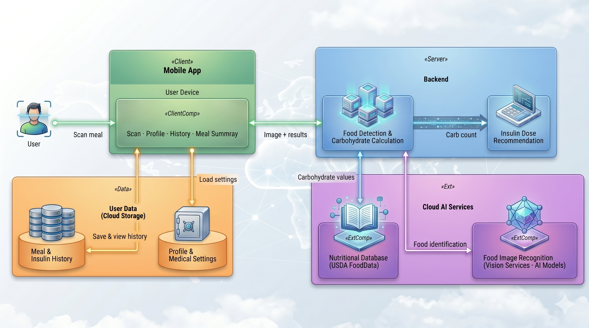
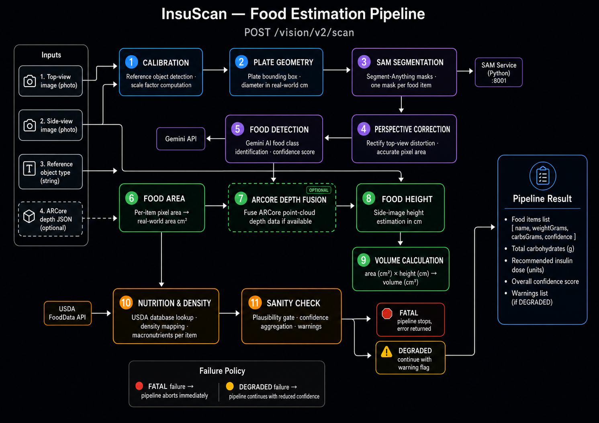

InsuScan photographs a meal, estimates carbohydrates using computer vision and AI, and calculates a personalised insulin dose — all in seconds.
A short walkthrough showing the problem, the solution, and the app in use.
People with insulin-dependent diabetes must estimate the carbohydrates in every meal to calculate their insulin dose. Manual carb counting is slow, error-prone, and requires constant guesswork about portion sizes — and dosing errors have real health consequences.
InsuScan replaces guesswork with measurement. The user photographs their plate; the system detects each food item, measures its real-world size using a physical reference object, estimates weight and carbohydrates, and returns a personalised insulin dose based on the user's own insulin plan.
A full-stack platform: a native Android client, a Spring Boot backend with a layered architecture, a Python segmentation microservice, and external AI and data services.

Native Kotlin app. Captures top-view and side-view meal photos with CameraX, collects optional ARCore depth data, manages personal insulin plans, and signs in with Firebase Authentication.
Java 21 REST API on port 9693. Runs the 11-stage food-estimation pipeline, manages users and meal records, calculates insulin doses, and exposes Swagger UI API docs.
Python microservice on port 8001 running MobileSAM for pixel-accurate segmentation masks and Depth-Anything-V2 for monocular depth estimation.
Vision-language model used for semantic tasks: identifying what each segmented food item is, estimating coverage percentages, and classifying visual state.
Official nutrition database providing carbohydrates, macronutrients, and density data per 100 g for every identified food item.
Cloud database storing user profiles with insulin settings, and complete meal records with scan results, food items, and dose calculations.
The heart of InsuScan. A single scan request travels through eleven ordered stages — from raw pixels to grams of carbohydrates per food item. Each stage reads its predecessors' outputs and writes its own.

Each area of the system has its own dedicated documentation page.
How every stage works, the design decisions behind them, and where errors propagate.
The dose formula, insulin plans, validation rules, safety thresholds, and the testing strategy.
Every REST endpoint, request/response models, meal lifecycle, and data schemas.
The scan flow, camera coaching system, profile management, and client-side architecture.
| Android Client | |
|---|---|
| Language | Kotlin |
| Camera | CameraX |
| Depth Sensing | ARCore (optional) |
| Networking | Retrofit2 |
| Auth | Firebase Auth (Google Sign-In) |
| Reference Detection | OpenCV 4.9 |
| Backend Server | |
|---|---|
| Runtime | Java 21 · Spring Boot 3.5 |
| Segmentation | MobileSAM (Python) |
| Depth | Depth-Anything-V2-Small |
| AI / Vision | Google Gemini API |
| Nutrition | USDA FoodData Central |
| Database | Firebase Firestore |
| Deployment | Docker Compose |
| API Docs | SpringDoc / Swagger UI |
Spring Boot REST API, the 11-stage food-estimation pipeline, insulin dose calculation, and the SAM Python microservice.
github.com/NimiB2/insuscan-server →Kotlin client with CameraX capture, ARCore depth scanning, insulin plan management, and the full scan-to-dose user flow.
github.com/DanielSelas/InsuScan---AndoridApp →